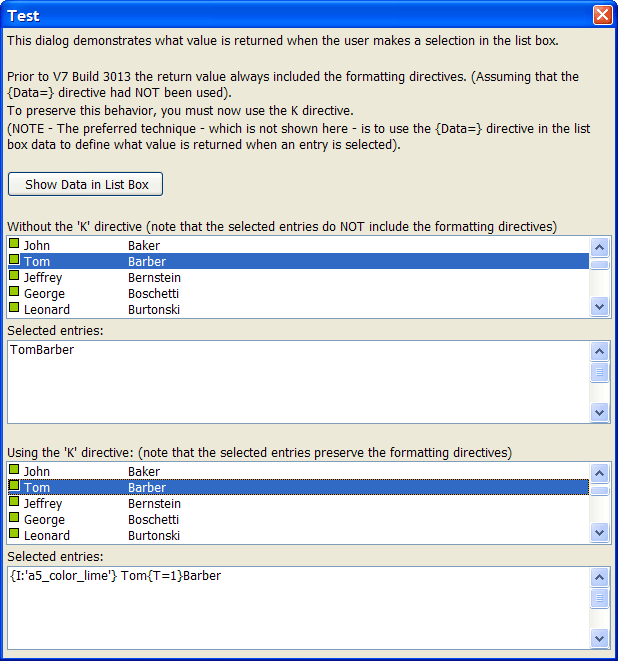

List Box K Directive
Prior to Version 7 Build 3013 the return value from a list box that used owner draw formatting always included the formatting directives (assuming that the {Data=} directive had NOT been used).
To preserve this behavior, you must now use the K directive.
 Note : The preferred
technique - which is not shown below - is to use the {DATA}
directive in the list box data to define what value is returned when an
entry is selected.
Note : The preferred
technique - which is not shown below - is to use the {DATA}
directive in the list box data to define what value is returned when an
entry is selected.

Refer to Record List - Combo Box Control Syntax, List Box Control Syntax